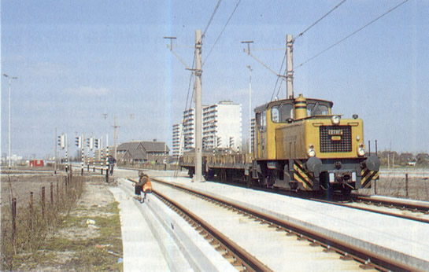
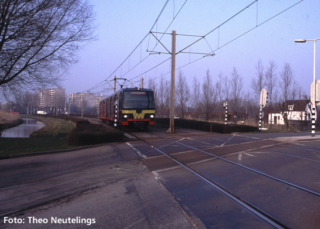
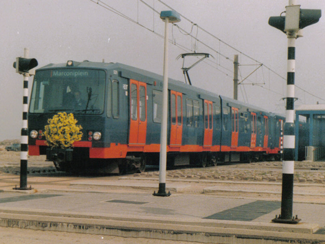
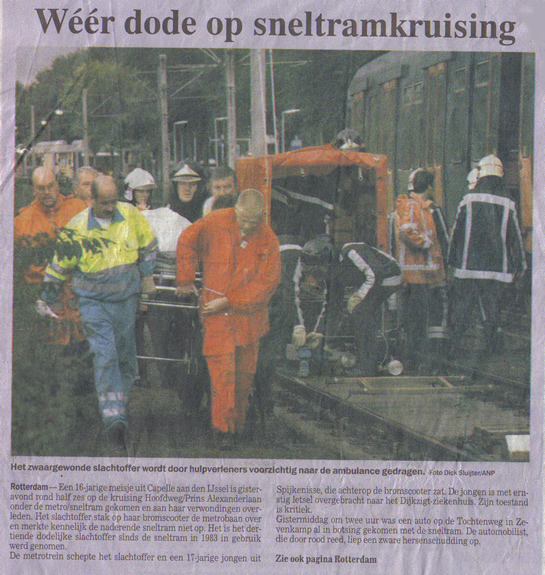
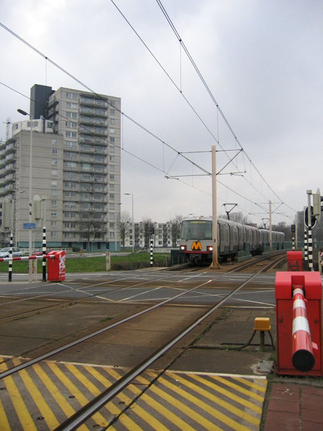
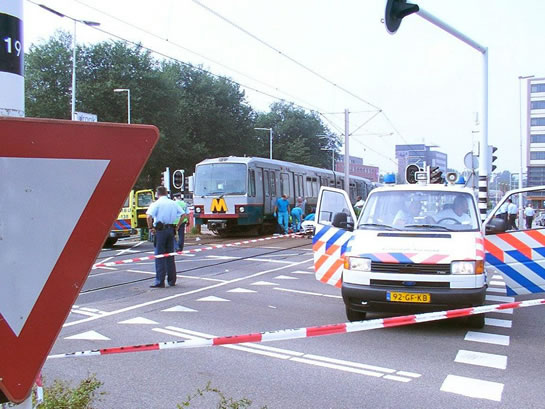
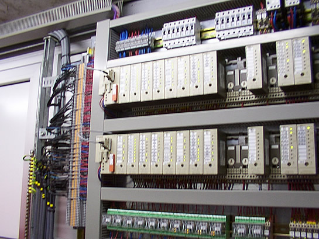
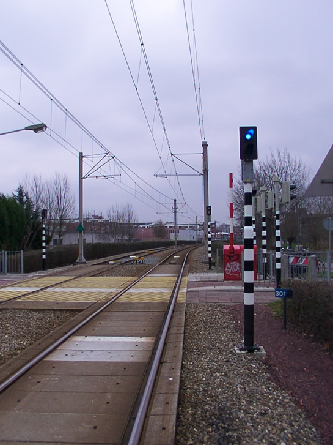
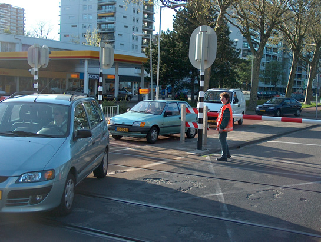
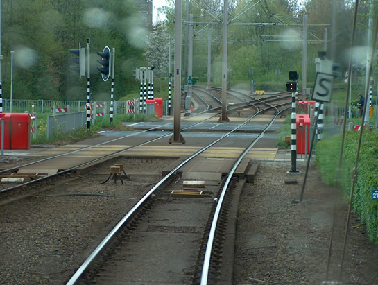

AHOB's langs sneltramtracé
In 1979 werd het besluit genomen om het oosten van de stad Rotterdam met kwalitatief openbaar vervoer te ontsluiten. Tot nog toe reden er slechts bussen naar de woonkernen Zevenkamp, Ommoord en Prinsenland. De keuze viel op een metroverbinding. Echter, door de economische situatie en tegenvallende resultaten bij de metrobouw in Amsterdam dit op zowel politiek als financieel vlak niet haalbaar. Er werd gekozen voor een sneltramverbinding. De bouw viel vijf keer goedkoper uit dan een metro. Wethouder Mentink sprak in de tijd van de besluitvorming de volgende woorden: "We accepteren een grotere onveiligheid en een grotere onregelmatigheid". Acties en bijeenkomsten van de actiegroep: "In Ommoord geen gedonder, de metro eronder" leverden geen veranderingen op in de besluitvorming en het sneltramplan. De bouw kon beginnen.

De bouw is begonnen, locomotief 6002 nabij de kruising met de Prins Alexanderlaan.
De sneltramlijn zou aansluiten op het metrotracé, dat van Capelsebrug tot Coolhaven liep. Net buiten Capelsebrug zouden de metro's als sneltram verder rijden, waarbij ook ander verkeer op straatniveau gekruist werd. De sneltramrijtuigen kregen stroom van een bovenleiding, en zouden maximaal 50 km/h per uur rijden, net als het overige verkeer. De kruisingen werden uitgerust met verkeerslichtinstallaties, om weggebruikers erop te kunnen attenderen dat er een sneltram naderde.

Een enkel rijtuig Type T, kruising 's-Gravenweg, 1995.
In 1983 werd het eerste deel van het sneltramtracé tussen Capelsebrug en Ommoord (Binnenhof) geopend. Nog voor de lijn officieel in gebruik werd genomen, vond er een aanrijding plaats tijdens het proefbedrijf op kruising 's-Gravenweg, waarbij een auto total-loss gereden werd door een naderende sneltram. Er vielen geen gewonden. Toch zou het niet bij dit ene incident blijven. Op de dag dat het sneltramtracé werd geopend naar de wijk Ommoord (Binnenhof), werd een brommerrijder aangereden door een sneltram.

De metro rijdt nu ook naar Marconiplein. Openingsrit vanaf station de Tochten in Zevenkamp naar Marconiplein (1986).
De bewoners van de Prins Alexanderpolder moesten wennen aan de nieuwe sneltram. Dat ging moeilijk. In de jaren dat de sneltram er lag, vonden er veel aanrijdingen plaats, die varieerden van blikschade tot aanrijdingen met dodelijke afloop.
Om het aantal aanrijdingen terug te dringen, werd in de jaren negentig een campagne gestart: "Een gewaarschuwd mens telt tot twee!". Verkeersgebruikers (met name voetgangers en fietsers) werden gewezen op de gevaren van de sneltram. Ook werden de gelijkvloerse kruisingen naast optische signalen uitgerust met geluidssignalen. Dit verbeterde de veiligheidssituatie, maar geheel veilig werd het niet.

Er werd meer gedaan aan het beveiligen van de kruisingen. Zo werden locaties met een dode hoek aangepast. Op gelijkvloerse kruising Alexander ontstond een dode hoek doorat er een relaisruimte in een deel van het zichtveld stond. Besloten werd om het relaishuis in z'n geheel te verplaatsen, om meer (bijna)aanrijdingen in de toekomst te voorkomen. Ook de sneltramhaltes werden zodanig verbouwd, dat er goed zicht was op de kruisingen. De kruising kon nu in enkele blikken overzien worden. Rijtuig 5229 werd korte tijd voorzien van een trambel, maar ook deze proef leidde niet tot een grotere verkeersveiligheid op de gelijkvloerse kruisingen.
Toch bleven (bijna)aanrijdingen voorkomen. Er startte een nieuwe proef. In 1994 werd kruising Burgaslaan als eerste uitgerust met een AHOB-systeem. De voetgangers en fietsers werden door middel van slagbomen afgescheiden van een voorbijrijdende sneltram. De proef slaagde, er vonden geen aanrijdingen plaats tussen het 'langzame verkeer' en de sneltram.
Op 8 oktober 1999 vond een aanrijding met dodelijke afloop plaats op de gelijkvloerse kruising met de Hoofdweg. Een 16-jarig meisje op een scooter stak hier vlak na een sneltram richting de wijken over en zag daarbij een naderende metrosneltram komende vanúit de wijken over het hoofd. Hierdoor werd ze geraakt en overleed als gevolg van de verwondingen die zij had opgelopen bij de aanrijding.

Aangezien de proef op de Burgaslaan geslaagd was, werd na de aanrijding op de Hoofdweg besloten tot het plaatsen van AHOB's langs het gehele sneltramtracé. Eenentwintig gelijkvoerse kruisingen werden uitgerust met de Automatische Halve Overwegbomen. De planning was dat deze bomen er in de zomer van 2001 allemaal moesten staan.
Door technische- en leveringsproblemen stonden de AHOB's er nog niet in 2001. Als eerst werd in 2001 kruising Romeynshof uitgerust met het gloednieuwe systeem, dat erg storinggevoeligg bleek. De AHOB's bleven te lang gesloten of gingen te laat dicht. Dit leverde gevaarlijke situaties op. Een lange tijd stonden daarom diverse AHOB's buiten dienst. Langzaam maar zeker werden in 2002 de kruisingen 's-Gravenweg en Prins Alexanderlaan voorzien van AHOB's. Later volgden er meer kruisingen.

Kruising Prins Constantijnweg, ook in een vroeg stadium werd deze kruising voorzien van het AHOB-systeem. Een tweewagentrein Type T passeert. Winter 2004.
Toch bleven de storingen in het systeem een doorn in het oog van de RET en de deelgemeente. Lussen en aandrijvingen voor het systeem functioneerden niet naar wens. Hierdoor liep de indienststelling van kruisingen Kralingseweg, Grote Beer, Hoofdweg, Zevenkampsering en Tochtenweg aanzienlijke vertraging op. In de tussentijd vonden wederom diverse aanrijdingen plaats op overwegen die niet waren voorzien van het AHOB-systeem, waarvan enkele met dodelijke afloop.

Een dode op kruising Hoofdweg. Een voetganger komt in aanrijding met metrosneltram 5239, 13 augustus 2003.
In 2004 worden uiteindelijk alle 21 kruisingen in dienst gesteld. De laatste kruising die in dienst gesteld wordt is kruising Tochtenweg. Mede door een complexe situatie (eindstation en wisselcomplex) duurde de ingebruikname langer dan normaal. Ondertussen heeft de AHOB zijn nut bewezen. Op geen van de gelijkvloerse kruisingen op het sneltramtracé die uitgerust zijn met het functionele systeem zijn nog aanrijdingen voorgekomen.
De techniek
Een AHOB-installatie bestaat uit waarschuwingslichten in combinatie met geluidssignalen, slagbomen en een 'AHOB Toestand Sein (ATS)' ter informatie voor de metrobestuurder. De AHOB's zijn gekoppeld aan de zogenaamde 'AHOB-ruimte'. Hierin komt alle informatie van de AHOB-installatie binnen. De belangrijke 'events' die de AHOB uitvoert, worden gelogd en zijn uitleesbaar met een laptop. Zo kunnen storingen achterhaald worden. Twee PLC's (netwerkcomputers) controleren elkaar continue op de acties die zij uitvoeren (bijvoorbeeld sluiten van bomen, activeren optische/geluidssignalen). Wanneer een van de twee PLC's in storing valt, zal de kruising om veiligheidsredenen compleet afgesloten worden. Alle bomen gaan dan in de sluitingstand. (Lees ook noodsluiting).

De AHOB-ruimte van binnen uit gezien. Het betreft hier de AHOB-ruimte van kruising 'Grote Beer'.
Zodra een sneltram een lus berijdt, wordt deze informatie gecontroleerd met een voorwaarde uit de relaisruimte (waarin de treinbewaking van bepaalde baansecties geregeld wordt). Hieruit wordt bijvoorbeeld de rijrichting van de trein bepaald. Zodra een aanvraaglus bereden wordt, gaat er een signaal naar het AHOB-systeem. Zo nodig zal deze beginnen met het afsluiten van de kruising. Vier seconden branden de waarschuwingslampen 'geel', daarna springen deze op rood. De bomen sluiten na 4 seconden rood. Zodra álle bomen uit de bovenste stand komen, zal het ATS-sein op geel springen, of doven. De kruising is dan veilig te berijden.

Het ATS-sein, zoals hierboven te zien, geeft een blauwe lamp. Dit betekent dat de kruising niét veilig te berijden is. Dat klopt: de bomen zijn immers geopend.
Nadat een sneltram over een of meerdere 'uitrijlus(sen)' komt, zullen de AHOB's zich openen. Wanneer er een nog een sneltram passeert, zullen de bomen dichtblijven. De uitspraak 'wacht tot het rode licht gedoofd is' is bij de AHOB's langs het sneltramtracé niet van toepassing. Het AHOB systeem bij de RET heeft een gegarandeerde opening in het systeem en opent alleen als het AHOB-systeem minimaal 2 seconden 'open' kan staan met gedoofde lampen. Als een AHOB om wat voor reden dan ook in storing gaat, zal het ATS-sein blauw blijven. De bestuurder van de sneltram zal dan de kruising voorzichtig moeten naderen. Is de storing in de categorie 'groot' dan zullen de bomen permanent gesloten blijven tot de storing verholpen is. Dit wordt 'noodsluiting' genoemd. Lastig voor het snelle verkeer, maar wel zo veilig.

De AHOB is omwille van een storing in noodsluiting gegaan. Het (auto)verkeer kan niet normaal doorstromen en wordt omgeleid door RET-personeel.
Wanneer er een lusstoring optreed, waardoor een aanvraag gemist wordt, zal de AHOB geheel gaan werken op de voorwaarden die worden ontvangen vanuit de relaisruimte. Hierdoor kan het zijn dat een AHOB eerder sluit dan normaal. Het lijkt dan langer te duren voor een sneltram de kruising bereikt. Wanneer de voorwaarden om een bepaalde reden niet ontvangen wordt door de AHOB-ruimte, kan er gebruik gemaakt worden van een tweede aanvraaglus. Deze ligt vlak naast het ATS-sein. Na enkele seconden zal de AHOB sluiten en zal het ATS het sein veilig geven.
Op de meeste kruisingen is er ook een Verkeersregel Installatie (VRI) gekoppeld aan het AHOB-systeem. Dit is gedaan om te voorkomen dat een verkeerslicht groen toont, terwijl de AHOB gesloten is (en dus rood toont) en er een sneltram zal passeren. Zo wordt verwarring bij automobilisten en andere weggebruikers voorkomen. Een nadeel bij een storing aan de AHOB-installatie is dat het autoverkeer richting de overweg permanent rood zal houden.

Kruising President Rooseveltweg. De VRI geeft een wit-knipperende lamp: dat betekent dat de kruising veilig is. De blauwe lamp van het AHOB-systeem is gedoofd. Dit houdt in dat ook de AHOB geen storingen vertoont, en dat de kruising normaal gepasseerd kan worden. Eenzelfde situatie is van toepassing op de Hoofdweg.
Zodra de kruisingen President Rooseveltweg of Hoofdweg een AHOB-storing hebben, zal automatisch de eerste aanvraag voor de verkeerslichtinstallatie vervallen. Daarom moet dan een 'headcount' gemaakt worden, waarbij de VRI aangevraagd wordt bij de tweede aanvraaglus, die naast de negenoog/ATS-combinatie (zie foto) staat. Dit kan soms een minuut duren.
Om te voorkomen dat kruisingen bij lang halteren in een station te vroeg dichtgaan, en lang dichtblijven, wordt het AHOB-systeem niet 'aangevraagd' wanneer er op een bepaald station een vertreksverbod gegeven wordt. Dit is een ATB-signalering, waarbij het niet toegestaan het perron uit te rijden. Ook hier ontvangt de AHOB-ruimte deze ATB-voorwaarden uit het relaishuis. Zie ook de informatie pagina over Automatische Treinbeïnvloeding. Bij kruisingen die vlak bij een station liggen, is een halteringstijd voor het AHOB-systeem opgenomen van ongeveer 14 seconden. Dit voorkomt dat een AHOB meteen sluit, als de passagiers van het nabijgelegen station nog moeten in- en uitstappen.